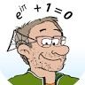
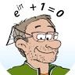

Maak je eigen fractal
De aangerade waardes kan je gebruiken om uit te vinden hoe het systeem werkt.

Gemaakt door Dennis Hermes
 In opdracht van P. Blijerveld
De aangerade waardes kan je gebruiken om uit te vinden hoe het systeem werkt.
Gemaakt door Dennis Hermes
 In opdracht van P. Blijerveld